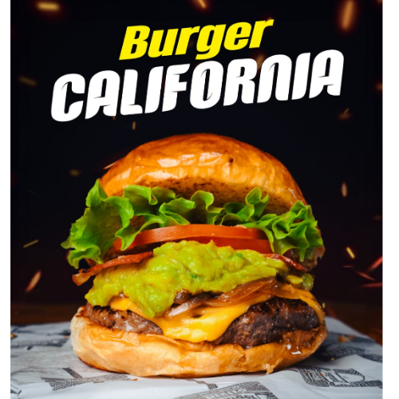
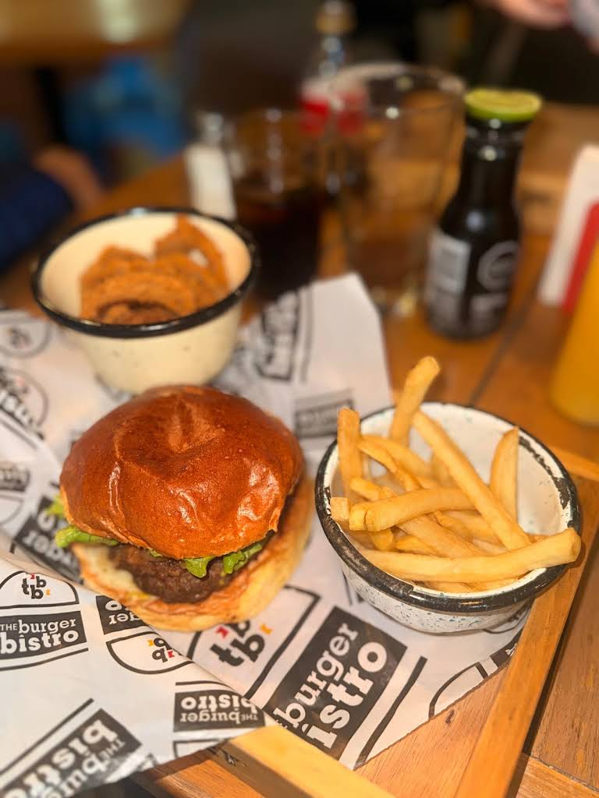

BURGERCalifornia
Res con guacamole, cheddar y tocineta. Con el toque de cebolla caramelizada.
Esta se me antoja
SOGAMOSO, BOYACÁ · THE BURGER BISTRO
Hamburguesas, papas y una buena excusa
para encontrarnos.
02 / A TU MANERA
Una salida con amigos, algo para llevar o una noche en casa. Elige cómo quieres disfrutarlo.
03 / AQUÍ NOS ENCONTRAMOS
Confirma el horario y la disponibilidad directamente con el restaurante.
Consultar horario ↗Rango orientativo reportado por comensales, no una cotización.
*Calificación, número de opiniones y rango según la ficha de Google Maps facilitada para esta demo; pueden cambiar.
04 / UN MENSAJE Y EMPEZAMOS
Elige lo que tienes en mente y prepara tu consulta. El Bistro te confirma precios, disponibilidad y cómo recibir tu pedido.
01 Elige tu antojo.
02 Revisa tu mensaje.
03 Envíalo por WhatsApp.
ANTES DEL PRIMER MORDISCO
Sí, el local ofrece entrega a domicilio. Consulta cobertura, valor de envío y tiempo estimado por WhatsApp, o revisa las opciones de entrega en Rappi.
Sí. Hay consumo en el lugar en la Cra. 11 #25-13, Sogamoso. También puedes consultar pedidos para recoger.
Puedes consultar la carta publicada en Rappi o solicitarla por WhatsApp. Los precios pueden variar según el canal de compra.
No. La página prepara una consulta para WhatsApp; debes enviarla y esperar la confirmación del restaurante. No se solicitan pagos en esta demo.